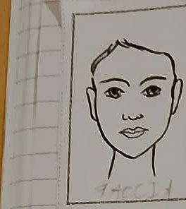
la facciafemminile singolare
Plurale: le facce
Un luogo per ripassare le lezioni e
continuare a imparare, un giorno alla volta.
Seleziona una lezione per iniziare.
Utilizzando questo sito, accetti i
Termini di utilizzo → Criteri di organizzazione → Creatore e collaboratori →Note interne sulle scelte usate per organizzare il sito.
Questo sito è stato realizzato da Matías Coria come iniziativa personale di supporto allo studio dell’italiano A2.
Segnalazioni di errori, correzioni e proposte per migliorare il materiale sono benvenute. Le indicazioni dell’insegnante hanno sempre la priorità.
Ti interessa realizzare un progetto web simile? Puoi contattare il creatore tramite il suo sito professionale, dove sono disponibili i recapiti.
Nessun argomento trovato.
Brevi Presentazioni.
Ciao! Mi chiamo Li e sono cinese. Il mio cognome è Hu.
Sono nata a Pechino, in Cina e ho 23 anni.
Sono in Italia da tre anni e abito a Milano, in Via Paolo Sarpi, con
la mia famiglia.
Non sono sposata, ma sono fidanzata da due anni con un ragazzo
cinese.
Nel mio quartiere ci sono moltissimi abitanti cinesi e io ho tanti
amici che vengono dalla Cina.
Faccio la commessa nel negozio di mio padre insieme a mia madre e a
mia sorella.
Il nostro è un negozio di scarpe. A me piace il mio lavoro.
Nel negozio vengono molti clienti italiani e io voglio imparare
l’italiano perché è importante per il mio lavoro. Per questo
frequento un corso di lingua italiana in una scuola di Milano.
Quando non lavoro, mi piace ascoltare la musica o navigare in
internet.
Segna con una croce se Vero (V) o Falso (F).
1. Lei si chiama Li. Vero
2. Lei è nata in Italia. Falso
(È nata a Pechino, in Cina.)
3. Abita in Italia da 23 anni. Falso
(Ha 23 anni, ma vive in Italia da tre anni.)
4. Lei è nubile. Falso
5. Lavora in un ristorante. Falso
(Lavora nel negozio di scarpe di suo padre.)
6. Li lavora con i suoi genitori. Vero
(Lavora con sua madre nel negozio di suo padre.)
7. Li vuole imparare l’italiano perché vuole fare un altro lavoro. Falso
(Vuole imparare l’italiano perché è importante per il suo lavoro.)
8. Nel tempo libero, a Li piace sentire la musica o usare il computer. Vero
Parla con un tuo compagno/a.
(La maestra si presenta.)
Come ti chiami? Sara P.
Di dove sei? Sono italiana.
Quanti anni hai? Ho 38 anni.
Quando sei nata? Sono nata il 7 gennaio 1976.
Sei sposata? No, non sono sposata. Convivo con il mio compagno.
Hai figli? Ho una figlia.
Che lavoro fai? Sono un'insegnante.
Che cosa ti piace fare nel tuo tempo libero? Nel mio tempo libero mi piace fare
delle lunghe passeggiate nel verde.
Piacere!
Molto lieta / Molto lieto.
Lieto / Lieta di conoscerla.
In Italia quando si conosce una persona si dà la mano. Anche nel tuo Paese?
Mi chiamo Marta Liu e sono cinese, di Pechino. Ho 32 anni e sono
sposata.
Sono in Italia da otto mesi e lavoro in un ristorante. Faccio la
cuoca.
In cucina, i miei colleghi vengono tutti dalla Cina e così noi
parliamo sempre cinese. Abito con mio marito a Firenze, in via
Garibaldi numero 53, vicino al supermercato.
Frequento una scuola per imparare a parlare meglio l’italiano.
Comprendere e scambiare semplici informazioni personali in situazioni quotidiane.
Attraverso la lettura e l’ascolto di brevi presentazioni, lo studente impara a comprendere informazioni relative al nome, all’età, alla provenienza, alla residenza, alla famiglia, allo stato civile, al lavoro e agli interessi personali.
Inoltre, impara a presentarsi, a fare domande e a rispondere a un’altra persona, utilizzando espressioni semplici e formule di saluto appropriate.
| Esempi della lezione | Argomento grammaticale | Spiegazione |
|---|
Verbo studiato specificamente durante la lezione.
Con queste conoscenze si può:
Role play e verbi tempo presente 1ª, 2ª e 3ª coniugazioni.
Scambiare semplici informazioni e descrivere un luogo usando frasi chiare.
Il role play permette di esercitare domande e risposte in Questura. Le attività sui verbi aiutano a riconoscere le tre coniugazioni del presente indicativo e alcune forme irregolari. La presentazione di un’immagine della propria città permette di usare c’è e ci sono.
| Esempi della lezione | Argomento grammaticale | Spiegazione |
|---|
Verbo studiato specificamente durante la lezione.
Con queste conoscenze si può:
Domande, aggettivi - pronomi possessivi e preposizioni.
Fare e comprendere domande semplici; indicare a chi appartiene un oggetto e parlare della propria provenienza.
Le attività esercitano le domande e le risposte tra compagni, i dimostrativi e i possessivi, la nazionalità e le preposizioni usate con Paesi, città e continenti.
| Esempi della lezione | Argomento grammaticale | Spiegazione |
|---|
Verbo studiato specificamente durante la lezione.
Con queste conoscenze si può:
Gli articoli, aggettivi e pronomi possessivi.
Riconoscere e usare gli articoli, chiedere a chi appartiene un oggetto e concordare i possessivi con il nome; lavorare con vocaboli geografici relativi all’Europa.
La lezione riprende i nomi relativi al cibo, gli articoli determinativi, i dimostrativi e i possessivi. La fotocopia finale propone lettura, riconoscimento di Paesi e capitali e domande sulla provenienza.
| Esempi della lezione | Argomento grammaticale | Spiegazione |
|---|
Verbo studiato specificamente durante la lezione.
Con queste conoscenze si può:
Il passato prossimo e l’Armadio dei verbi
Formare il passato prossimo con avere ed essere; riconoscere i participi regolari e irregolari e la concordanza; comprendere e raccontare storie personali in ordine cronologico, usando le letture di Laura e Abubakar e le tabelle dell’Armadio dei verbi.
| Esempi della lezione | Argomento grammaticale | Spiegazione |
|---|
Verbi studiati specificamente durante la lezione; gli altri compaiono nei materiali della lezione.
Leggere e raccontare esperienze passate, riconoscere i verbi al passato nelle biografie e usare una linea del tempo per ordinare i fatti.
Nelle Lezioni 01 e 02 si incontrano i verbi al presente. La Lezione 06 applica il passato prossimo con un gioco e gli esercizi del libro.
Gioco e esercizi sul passato prossimo.
Esercitarsi nella scelta dell’ausiliare essere o avere, nella formazione del participio passato e nella concordanza delle forme al passato prossimo.
| Esempi della lezione | Argomento grammaticale | Spiegazione |
|---|
Verbi studiati specificamente durante la lezione; gli altri compaiono nei materiali della lezione.
Raccontare la propria storia in ordine cronologico e trasformare frasi dal presente al passato prossimo, anche quando il participio è irregolare.
La Lezione 05 presenta il passato prossimo e l’Armadio dei verbi. Qui le conoscenze vengono riprese mediante attività di gruppo ed esercizi scritti.
Correzione del passato prossimo, routine quotidiana e verbi riflessivi.
Ripassare il passato prossimo; parlare delle azioni quotidiane; riconoscere e coniugare i verbi riflessivi; distinguere addormentare da addormentarsi, andare da andarsene; usare correttamente salire e uscire al presente.
Questa sezione comprende l’argomento centrale e gli altri fenomeni grammaticali che compaiono nei materiali. Le spiegazioni della biblioteca sono più ampie e complementari.
| Esempi della lezione | Argomento grammaticale | Spiegazione |
|---|
La stella indica i verbi affrontati direttamente nelle spiegazioni; gli altri sono presenti negli esercizi, nelle correzioni o nella routine.
La Lezione 05 introduce la struttura del passato prossimo e la Lezione 06 ne propone gli esercizi. Qui si correggono alcuni di quegli esercizi e si passa alla descrizione delle attività abituali con i verbi riflessivi. Nella Lezione 08 si userà il presente per parlare della salute.
La salute, dal dottore e gli articoli determinativi.
Descrivere sintomi e dolori con parole semplici, partecipare a un dialogo dal medico, correggere errori comuni nell’uso di avere e degli articoli, riconoscere e scegliere gli articoli determinativi in base al nome.
La grammatica comprende sia il ripasso degli articoli sia le altre strutture che appaiono nel gioco di ruolo e nelle correzioni.
| Esempi della lezione | Argomento grammaticale | Spiegazione |
|---|
Le stelle indicano le forme verbali affrontate direttamente nelle attività; gli altri verbi compaiono nelle frasi e nei materiali.
Nelle prime lezioni si incontrano già gli articoli e le forme di essere e avere. Nella Lezione 07 si impara a descrivere una giornata e a riconoscere forme verbali al presente. Qui quelle conoscenze si applicano alle conversazioni sulla salute.
Preposizioni semplici, preposizioni articolate. Scuola italiana.
La prima parte affronta le nove preposizioni semplici. La seconda lavora sulla scuola italiana, sulla lettura e sulla scrittura. Le fotografie del libro sono riportate dopo le miniature del PDF.
Le preposizioni collegano parole e aggiungono informazioni: di chi? dove? da dove? con chi? per quale scopo? Ecco tutte quelle scritte nella prima diapositiva: di – a – da – in – con – su – per – tra – fra.
| Preposizione | Uso affrontato | Esempio della lavagna |
|---|---|---|
| DI | Possesso e provenienza | «Di chi è?» → domanda sul proprietario. «È di Maria.» / «Sono di Milano.» → indica l’origine cittadina. |
| A | Direzione, stato o inizio di un’attività | «Vado a Milano.» «Sono nato a Milano.» «Vado a scuola.» «Ho iniziato a fare il corso.» |
| DA | Provenienza e durata | «Vengo da Milano.» «Lavoro da tanti anni.» |
| IN | Stati, continenti, luoghi | «Sono nato in Brasile.» «Farò un viaggio in Asia.» «Lavoro in libreria.» «Sono in ufficio.» |
| CON | Compagnia | «Vado al mare con una mia amica.» |
| SU | Posizione su una superficie | «Il libro è sul tavolo.» «Le chiavi sono su quel mobile.» |
| PER | Scopo e direzione | «Sono qui per imparare l’italiano.» «Sono qui per te.» «Segui la strada per Milano.» |
| TRA / FRA | Tempo, luogo e relazione fra persone | «Vengo tra un minuto.» «C’è un incidente tra Genova e Imperia.» «Ci capiamo fra di noi.» |
Esempi dalla lavagna: «Di chi è?» → domanda sul proprietario. «È di Maria.» / «Sono di Milano.» → indica l’origine cittadina.
Come si usa: Non confondere «di Milano» (origine) e «da Milano» (punto di partenza).
Esempi dalla lavagna: «Vado a Milano.» «Sono nato a Milano.» «Vado a scuola.» «Ho iniziato a fare il corso.»
Come si usa: Con i nomi delle città è comune a; con i Paesi, normalmente in. Nelle costruzioni «iniziare a + infinito», a introduce il verbo.
Esempi dalla lavagna: «Vengo da Milano.» «Lavoro da tanti anni.»
Come si usa: Da indica il punto di partenza, ma anche una durata iniziata nel passato e ancora valida. «Sono di Milano» non equivale a «vengo da Milano».
Esempi dalla lavagna: «Sono nato in Brasile.» «Farò un viaggio in Asia.» «Lavoro in libreria.» «Sono in ufficio.»
Come si usa: Con i Paesi e i continenti si usa spesso in. Alcuni luoghi ricorrenti prendono in: in cucina, in garage, in biblioteca, in discoteca.
Esempi dalla lavagna: «Vado al mare con una mia amica.»
Come si usa: Indica con chi si svolge l’azione. «Al mare» contiene invece una preposizione articolata: a + il = al.
Esempi dalla lavagna: «Il libro è sul tavolo.» «Le chiavi sono su quel mobile.»
Come si usa: Nel primo esempio «sul» è la forma articolata di su + il.
Esempi dalla lavagna: «Sono qui per imparare l’italiano.» «Sono qui per te.» «Segui la strada per Milano.»
Come si usa: Per + infinito può indicare una finalità; «per Milano» può indicare direzione.
Esempi dalla lavagna: «Vengo tra un minuto.» «C’è un incidente tra Genova e Imperia.» «Ci capiamo fra di noi.»
Come si usa: Tra e fra sono di norma intercambiabili. La prima frase parla del futuro: un minuto a partire da ora.
La scheda fotografata nel PDF mostra che alcune preposizioni possono unirsi agli articoli determinativi. Non tutte le preposizioni formano una tabella di articolazioni: qui consideriamo di, a, da, in, su.
| Prep. | il | lo | la | l’ | i | gli | le |
|---|---|---|---|---|---|---|---|
| di | del | dello | della | dell’ | dei | degli | delle |
| a | al | allo | alla | all’ | ai | agli | alle |
| da | dal | dallo | dalla | dall’ | dai | dagli | dalle |
| in | nel | nello | nella | nell’ | nei | negli | nelle |
| su | sul | sullo | sulla | sull’ | sui | sugli | sulle |
Per esempio: «Il libro è sul tavolo» = su + il. «Vado al mare» = a + il. «Sono nella classe» = in + la.
La diapositiva chiede: «Scrivi 2 frasi per ogni preposizione semplice». Questo significa 18 frasi: due per ciascuna di di, a, da, in, con, su, per, tra, fra.
Modelli per esercitarsi (aggiunta didattica):
| Preposizione | Prima frase | Seconda frase |
|---|---|---|
| di | Il quaderno è di Luca. | Sono di Torino. |
| a | Vado a scuola. | Abito a Roma. |
| da | Vengo da casa. | Studio italiano da due mesi. |
| in | Vivo in Italia. | Sono in cucina. |
| con | Parlo con Sara. | Vado con un amico. |
| su | Il libro è su una sedia. | La penna è sul tavolo. |
| per | Studio per imparare. | Parto per Firenze. |
| tra | Arrivo tra un’ora. | La farmacia è tra la banca e la scuola. |
| fra | Torno fra dieci minuti. | Ci vediamo fra amici. |
Il materiale distingue scuola primaria, scuola secondaria di I grado, scuola secondaria di II grado, università e CPIA. La pizarra presenta anche i primi anni d’istruzione: nido, scuola dell’infanzia, scuola primaria, scuola media.
| Percorso | Età indicativa | Che cosa si studia / tipo |
|---|---|---|
| Nido | 0–3 anni circa | Non è scuola dell’obbligo. |
| Scuola dell’infanzia | 3–6 anni | Non obbligatoria. |
| Scuola primaria | 6–11 anni | 5 anni, dalla prima alla quinta. |
| Secondaria di I grado | 11–14 anni | 3 anni; termine della scuola media. |
| Secondaria di II grado | 14–19 anni circa | Licei, istituti tecnici, istituti professionali; percorsi di formazione professionale. |
| Università | Dopo la scuola secondaria | Percorsi diversi: laurea triennale, magistrale o corsi a ciclo unico. |
| CPIA | Istruzione degli adulti | Percorsi per adulti e corsi di lingua italiana, anche A2. |
Attenzione: le età sono quelle indicative del percorso ordinario raffigurato nel libro; per alcuni percorsi possono esserci differenze. La scheda distingue anche l’istruzione obbligatoria e quella non obbligatoria.
Test di lettura e comprensione: «La scuola in Italia» (pagina 15). Il brano descrive la scuola primaria, quella secondaria di primo grado, la scuola superiore e gli studi universitari. Ecco le cinque domande con le risposte ricavate dal testo fotografato:
| Domanda | Risposta | Come ricavarla |
|---|---|---|
| 1. La scuola primaria dura… | A. 5 anni | Nel testo: cinque anni, dalla prima alla quinta. |
| 2. Alla scuola media c’è l’esame dopo… | C. La classe terza | L’esame è alla fine della terza. |
| 3. Il liceo è… | A. Una scuola superiore | È un tipo di scuola secondaria di secondo grado. |
| 4. L’università c’è… | C. Solo in alcune città | La risposta segue il brano fotografato; non è un’affermazione statistica aggiornata. |
| 5. Alla fine dell’università gli studenti… | B. Prendono la laurea | Il testo spiega la tesi e la laurea. |
Il libro propone un brano di lettura e una prova a scelta multipla. La ricostruzione precedente conserva il senso delle risposte, mentre la fotografia documenta integralmente la pagina originale.
L’esercizio richiede di ascoltare una registrazione e scegliere SÌ o NO per cinque affermazioni. L’audio non è stato fornito: non è possibile verificare le risposte, quindi non ne inventiamo una soluzione.
| N. | Affermazione da verificare con l’audio |
|---|---|
| 1 | Alla è a Pesaro da 7 anni. |
| 2 | Alla è nata in Romania. |
| 3 | Alla ha frequentato la scuola primaria per 4 anni. |
| 4 | Alla in Moldavia era direttore di un supermercato. |
| 5 | Alla ha due figlie e un nipotino. |
La pagina chiede di parlare per uno o due minuti. Domande: «Che differenze ci sono tra il sistema scolastico italiano e quello del tuo paese?», «Che tipi di scuole conosci in Italia?» e «Puoi dire qualcosa della scuola in Italia?». Gli studenti possono usare la tabella del sistema scolastico precedente per rispondere.
Ieri sera non ti ho visto. Cosa hai fatto? Stasera lavori o sei libero? Quando ci vediamo?
Consegna: rispondere a tutte e tre le domande in un testo di almeno 25 parole. Le domande richiedono passato prossimo, presente e un’indicazione del prossimo incontro.
Risposta modello aggiuntiva, non trascrizione: «Ciao! Ieri sera ho studiato italiano e poi ho guardato un film a casa. Stasera non lavoro, quindi sono libero. Possiamo vederci domani alle sei davanti alla scuola. A presto!»
Le ultime fotografie riprendono esempi già studiati: «Sono andata in Iran per visitare…», «La borsa è di colore rosso» e «La borsa è rossa». Sono utili per distinguere una preposizione da un aggettivo e per riconoscere per + infinito. Alcuni appunti della lavagna non sono leggibili con sicurezza; non vengono ricostruiti.
Scegliere tra le preposizioni semplici in frasi di luogo, origine, tempo, compagnia e scopo; riconoscere le preposizioni articolate; comprendere e raccontare la struttura della scuola italiana; svolgere attività di lettura e scrittura.
Questa grammatica ampliata comprende sia gli argomenti principali sia altre strutture presenti nei materiali della giornata.
| Esempi della lezione | Argomento grammaticale | Spiegazione |
|---|
★ I verbi evidenziati sono stati esaminati direttamente nella lezione. Gli altri sono presenti nel materiale, senza essere necessariamente oggetto di studio specifico.
Le lezioni precedenti hanno già introdotto articoli, città e Paesi, passato prossimo e racconti personali. Qui queste conoscenze si applicano alle preposizioni e alla scuola; la Lezione 10 riprende in particolare i tempi composti e il lessico.
Ripaso, corpo e salute.
La lavagna presenta la frase «Ieri ho visto che tu hai bevuto». Ci sono due verbi al passato prossimo, non uno solo.
| Forma | Ausiliare al presente | Participio passato | Come si legge |
|---|---|---|---|
| ho visto | avere → ho | vedere → visto | Io ho visto. |
| hai bevuto | avere → hai | bere → bevuto | Tu hai bevuto. |
Regola: passato prossimo = ausiliare essere o avere al presente + participio passato. In questa frase entrambe le forme usano avere. Il participio di vedere è visto (irregolare); quello di bere è bevuto.
Che cosa significa «che»? Unisce le due proposizioni: «ho visto» e «tu hai bevuto». Non è un ausiliare né fa parte del participio.
La foto riporta anche «Come stai?» e le forme sto (presente di stare) e sono stato (passato prossimo). Per rispondere oggi: «Sto bene». Per raccontare ieri: «Ieri sono stato bene» (maschile) / «sono stata bene» (femminile).
«Io sono andato a Lecco. Ho visto le montagne. Dopo sono ritornato a casa.» Qui i verbi di spostamento sono costruiti con essere, mentre vedere prende avere.
La pagina 17 del libro propone due attività: un cerca-parole con materie scolastiche e un esercizio per scegliere quale scuola frequenta ciascuna persona.
Matematica, geografia, storia, tedesco, scienze, musica, inglese, italiano, religione. La griglia originale resta nella fotografia e la lista qui permette di studiare i nomi anche senza ingrandirla.
| Persona | Scuola | Perché |
|---|---|---|
| Cheng, 14 anni: ama numeri, conti ed economia. | Istituto tecnico | Percorso tecnico con materie economiche. |
| Eva, 8 anni: studia italiano e ama la storia. | Scuola primaria | A 8 anni frequenta normalmente la primaria. |
| Amina, 15 anni: vuole imparare un mestiere. | IeFP | Percorso di istruzione e formazione professionale. |
| Raul, 12 anni: ama le materie e lo spagnolo. | Scuola secondaria di I grado | A 12 anni frequenta normalmente la scuola media. |
| Svetlana, 23 anni: deve imparare l’italiano. | CPIA | Offre corsi d’italiano per adulti. |
| Luis, 16 anni: vuole diventare musicista. | Liceo musicale e coreutico | Percorso liceale con indirizzo musicale. |
Le risposte rispettano le sei tipologie proposte dalla consegna; l’età indica il percorso scolastico tipico, non una regola senza eccezioni.
Queste sette pagine del quaderno contengono tre disegni ciascuna: 21 immagini in totale. Ogni disegno è ritagliato separatamente e messo accanto al nome, al genere grammaticale e al plurale. Nei casi particolari la nota distingue l’uso corrente dalle forme possibili ma poco comuni.

Plurale: le facce
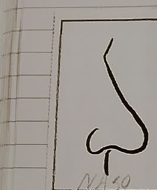
Plurale: i nasi
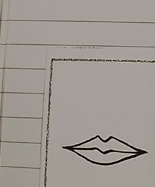
Plurale: le labbra
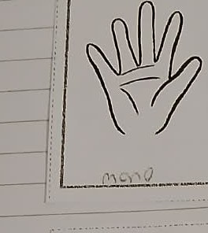
Plurale: le mani
Irregolare nella desinenza: la mano (femminile) → le mani.
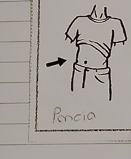
Plurale: le pance
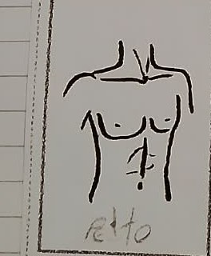
Plurale: i petti
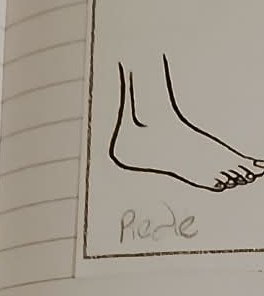
Plurale: i piedi
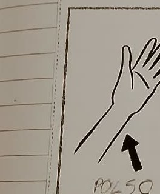
Plurale: i polsi
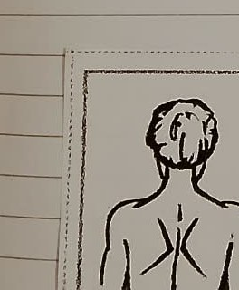
Plurale: le schiene
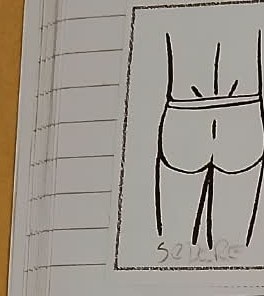
Plurale: i sederi
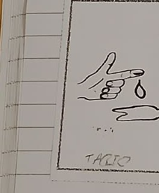
Plurale: Non usato normalmente
Nome di massa: normalmente non ha un plurale nell’uso quotidiano. «I sangui» esiste, ma è raro e con significati specialistici o figurati.
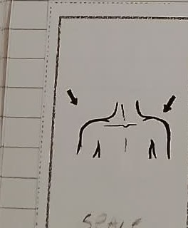
Plurale: le spalle
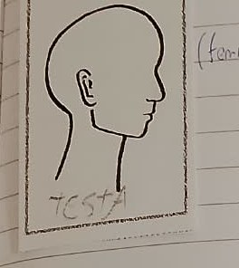
Plurale: le teste
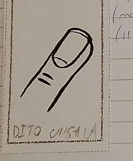
Plurale: le dita
Plurale comune per le dita della mano: le dita (femminile). Anche «i diti» è attestato in contesti particolari.
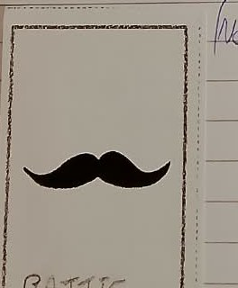
Plurale: i baffi
«I baffi» è già plurale; l’espressione comune per l’insieme dei peli sotto il naso è «i baffi». «Il baffo» esiste per un singolo baffo o un lato dei baffi.
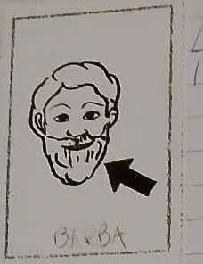
Plurale: le barbe
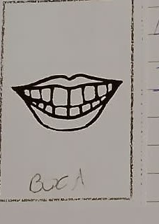
Plurale: le bocche
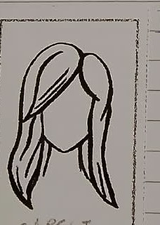
Plurale: i capelli
Plurale: le lingue
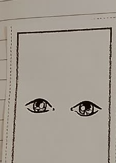
Plurale: gli occhi
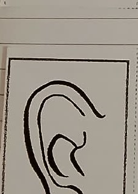
Plurale: le orecchie
Forma comune: le orecchie. «Gli orecchi» esiste in altri usi, ma non è la forma scelta nel quaderno.
Le illustrazioni provengono dal quaderno fotografato. Le forme e le note sono state controllate e organizzate per il ripasso; non sono presentate come trascrizione perfetta delle annotazioni manoscritte.
Questa attività è diversa dall’elenco delle parti del corpo. Le otto immagini descrivono come dire che una persona sta male. I disegni sono ritagliati singolarmente dalla fotografia e associati alle rispettive espressioni.
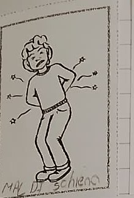
Ho mal di schiena.
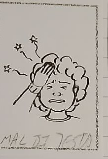
Ho mal di testa.
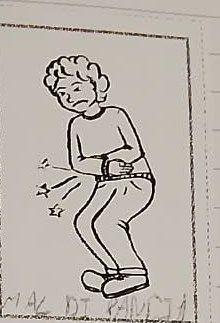
Ho mal di pancia.
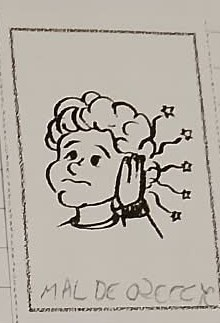
Ho mal d’orecchi. (Più comunemente: ho mal d’orecchio / ho male alle orecchie.)
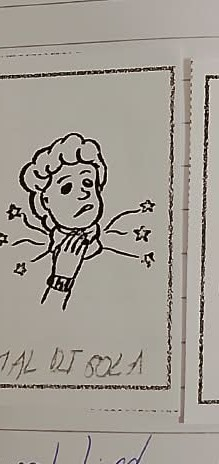
Ho mal di gola.
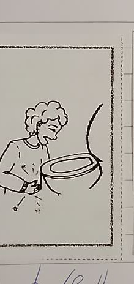
Devo vomitare. / Mi viene da rimettere.
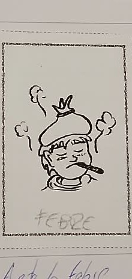
Ho la febbre.
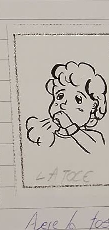
Ho la tosse.
Ho mal di + parte del corpo: «Ho mal di testa», «Ho mal di gola», «Ho mal di schiena». Ho + articolo + sintomo: «Ho la febbre», «Ho la tosse». Non dire «ho mal di febbre». Confronta anche il vocabolario della Lezione 08.
Per molte parole, il passaggio è regolare:
| Parola | Che cosa ricordare |
|---|---|
| la mano → le mani | Il nome è femminile anche se termina in -o. |
| il dito → le dita | Plurale comunemente femminile con -a; i diti possibile in altri usi. |
| il sangue | Nome di massa: normalmente non si conta e non si pluralizza. |
| i baffi | Il gruppo dei peli sopra il labbro superiore si nomina comunemente al plurale. |
| l’occhio → gli occhi | Il singolare usa l’ davanti a vocale; il plurale usa gli. |
| l’orecchio → le orecchie | Il plurale più comune nel vocabolario del corpo è femminile. |
Per descrivere un dolore si preferiscono espressioni come ho mal di testa, senza dover contare la parte del corpo. Il genere e il numero restano importanti quando si usano gli articoli.
Riconoscere e costruire forme di passato prossimo con avere ed essere; ripassare la scuola italiana; nominare 21 elementi del corpo con singolare e plurale; descrivere otto disturbi con frasi semplici.
Questa grammatica ampliata comprende sia gli argomenti principali sia altre strutture presenti nei materiali della giornata.
| Esempi della lezione | Argomento grammaticale | Spiegazione |
|---|
★ I verbi evidenziati sono stati esaminati direttamente nella lezione. Gli altri sono presenti nel materiale, senza essere necessariamente oggetto di studio specifico.
La Lezione 08 ha introdotto le parole per parlare dei sintomi e gli articoli; la Lezione 09 ha ripassato preposizioni e scuola italiana. Ora si collegano questi elementi al lessico del corpo e al passato prossimo già studiato nelle Lezioni 05–07.
La mattina di Rachida: azioni quotidiane, verbi riflessivi e passato prossimo.
Questa mattina mi sono svegliata presto, mi sono fatta una bella doccia e ho bevuto una grande tazza di caffè. Poi mi sono vestita con cura: un abito semplice ma elegante, per fare bella figura.
Mi sono lavata i denti e mi sono pettinata. Mi sono anche truccata un po’, non troppo.
Ho messo nella borsa i documenti e il curriculum, i fazzolettini e il telefono.
Prima di uscire mi sono fermata davanti allo specchio, mi sono guardata negli occhi e mi sono detta: “Speriamo bene!”.
Non ho preso l’autobus, ho preferito camminare. Ho attraversato il centro e sono andata verso il mare. In perfetto orario sono arrivata davanti al ristorante. Ho fatto un bel respiro e sono entrata per il mio colloquio di lavoro con il signor Arturo, il proprietario.
| Immagine | Risposta presente nella fotografia |
|---|---|
| Caffè | HO BEVUTO UNA GRANDE TAZZA DI CAFFÈ |
| Doccia | MI SONO FATTA UNA BELLA DOCCIA |
| Trucco | MI SONO ANCHE TRUCCATA UN PO’, NON TROPPO |
| Pettine | MI SONO PETTINATA |
| Denti | MI SONO LAVATA I DENTI |
| Specchio | PRIMA DI USCIRE MI SONO FERMATA DAVANTI ALLO SPECCHIO |
| Sveglia | MI SONO SVEGLIATA PRESTO (testo stampato) |
| Vestito | MI SONO VESTITA CON CURA: UN ABITO SEMPLICE MA ELEGANTE |
MI SONO SVEGLIATA (esempio stampato)
MI SONO FATTA
MI SONO VESTITA
MI SONO LAVATA
MI SONO PETTINATA
MI SONO TRUCCATA
MI SONO FERMATA
MI SONO GUARDATA
MI SONO DETTA
Questa mattina MI SONO ALZATO alle ore 7:00.
Quanti compagni si sono alzati prima delle 6?
UN COMPAGNO SI È ALZATO PRIMA DELLE 6
Quanti compagni si sono alzati tra le 6 e le 8?
I COMPAGNI SI SONO ALZATI TRA LE 6 E LE 8
Quanti compagni si sono alzati tra le 8 e le 10?
UN COMPAGNO SI È ALZATO TRA LE 8 E LE 10
Quanti compagni si sono alzati dopo le 10?
NESSUNO SI È ALZATO DOPO LE 10
Si sono alzati prima i maschi o le femmine?
SI SONO ALZATI PRIMA I MASCHI
Verbi stampati: LAVATO - GUARDATO - TAGLIATO - MESSO - FATTO - MANGIATO - ASCIUGATO - BEVUTO - INCONTRATO - PRESO - ALZATO - ANDATO.
Le forme in verde sono quelle manoscritte nella fotografia, anche quando non concordano con la frase. L’esempio «LAVATO» è già stampato.
| Mi sono LAVATO la faccia. (esempio stampato) | Mi sono ALZATO alle 7. | Mi sono ASCIUGATO le mani. |
| Ho MANGIATO lo yogurt. | Mi sono FATTO la barba. | Mi sono TAGLIATO le unghie. |
| Mi sono MESSO le scarpe. | Ho BEVUTO il latte. | Ho GUARDATO la televisione. |
| Ho INCONTRATO Olga. | Ho PRESO l’autobus. | Sono ANDATO a fare la spesa. |
MI SONO SVEGLIATO ALLE 7. MI SONO ALZATO ALLE 7:30. MI SONO LAVATO I DENTI. E POI MI SONO FATTO UNA DOCCIA. HO PRESO UN LATTE MACCHIATO E UN CORNETTO VUOTO AL MCDONALD’S. ALLE 9 HO LAVORATO. A MEZZOGIORNO HO FATTO LA SPESA. E DOPO HO MANGIATO UNA COTOLETTA. E POI HO PRESO LA METRO. E HO ARRIVATO ALLA SCUOLA PER STUDIARE ITALIANO.
Attività orale prevista dal libro. Non è presente una risposta scritta nella fotografia.
Comprendere e raccontare le azioni della mattina usando il passato prossimo; distinguere le forme con essere e avere; riconoscere i verbi pronominali e riflessivi; esprimere l’ora e raccontare una sequenza di azioni semplici.
Le frasi del testo di Rachida mostrano diverse costruzioni del passato prossimo. Per approfondirle, usa i collegamenti della tabella.
| Esempi della lezione | Argomento grammaticale | Spiegazione |
|---|
Azioni personali: «Mi sono svegliata», «mi sono pettinata», «mi sono vestita». La costruzione è pronome + essere + participio passato. Con il soggetto femminile singolare di Rachida il participio termina in -a; con un uomo: «Mi sono svegliato».
Altre azioni: «Ho bevuto», «ho messo», «ho preso». Qui il passato prossimo usa avere. La differenza non dipende dal fatto che l’azione sia avvenuta al mattino: dipende dalla costruzione del verbo.
Movimento: «Sono andata», «sono arrivata», «sono entrata». Questi esempi usano essere, con accordo del participio: andato/andata/andati/andate. Non tutti i verbi di movimento usano essere: nel testo compare anche «ho attraversato».
Ordine e orario: «Questa mattina», «poi», «prima di uscire», «alle 7», «alle 9», «a mezzogiorno» servono per organizzare il racconto.
Attenzione: nell’esercizio 6 è scritta a mano la frase «E ho arrivato alla scuola». Per il verbo arrivare, la forma corretta è «Sono arrivato a scuola». La trascrizione della risposta originale è stata mantenuta senza modificarla.
★ I verbi evidenziati sono stati praticati negli esercizi. Gli altri compaiono nel testo, anche se non sono stati studiati singolarmente.
Altri verbi presenti nei materiali: truccarsi, fermarsi, guardarsi, attraversare, entrare, camminare, preferire, incontrare, asciugarsi, tagliarsi. Sono riportati qui per completezza; non hanno ancora una scheda nell’Armadio dei verbi.
Con queste frasi puoi raccontare a un compagno a che ora ti sei svegliato e che cosa hai fatto prima di uscire di casa. Puoi anche chiedere «A che ora ti sei alzato?» e rispondere «Mi sono alzato alle sette».
La Lezione 05 ha introdotto il passato prossimo con essere e avere; la Lezione 07 ha lavorato sulle azioni quotidiane e sui verbi riflessivi. Questa lezione unisce i due argomenti in un racconto della mattina.
Il lavoro in Italia e il passato prossimo dei verbi riflessivi.
ARTURO: Allora Rachida, hai già lavorato in un ristorante?
RACHIDA: No, ma l’anno scorso ho fatto la stagione estiva in un bar a Rimini.
A.: Cosa hai imparato in questo bar? Cosa sai fare?
R.: Un po’ di tutto… caffè, drink, spremute, gelati… servizio ai tavoli, cassa…
A.: Hai studiato? Che studi hai fatto?
R.: Nel mio paese mi sono diplomata a 18 anni. Mi sono iscritta all’università, ma poi mi sono trasferita in Italia. Qui ho fatto alcuni corsi di italiano.
A.: Sento che parli bene… Quanti anni hai?
R.: Ho 24 anni, tra poco 25.
A.: Sei sposata, hai figli?
R.: Mi sono sposata un anno fa, non ho figli.
A.: Senti, facciamo così: puoi fare una settimana di prova e se tutto va bene ti prendo.
R.: In regola, con contratto?
A.: Visto che hai meno di 29 anni facciamo un contratto come apprendista, 6 ore al giorno e un giorno di riposo settimanale. Ma prima facciamo la prova e poi vediamo le altre cose.
R.: Va bene, quando posso iniziare?
A.: Anche domani mattina… puoi venire dalle 7 alle 13?
R.: Wow! Certo, domattina sono qui alle 7 meno 10. Grazie!
| Frase stampata | Risposta segnata | Annotazione a mano |
|---|---|---|
| Rachida ha già lavorato in un ristorante. | FALSO | — |
| Rachida a Rimini ha lavorato un anno. | FALSO | STAGIONE ESTIVA |
| Rachida si è diplomata nel suo paese. | VERO | — |
| Rachida si è sposata con un italiano. | FALSO | NON LO SAPPIAMO |
| Rachida è sposata da un anno. | VERO | — |
| Il colloquio di lavoro di Rachida è andato bene. | VERO | — |
Tu che lavori hai fatto nel tuo paese? E qui in Italia?
Nella fotografia le righe sono vuote: non è presente una risposta scritta.
Attività orale: nessuna risposta scritta nella fotografia.
Rachida ha preso la prima busta paga e parla con una sua collega.
RACHIDA: Non capisco, qui c’è scritto che il mio stipendio è di 1000 euro, ma io ho preso 700 euro!!!
MARIA: È normale… Con una parte del tuo stipendio il datore di lavoro paga i contributi per te.
R.: E a chi dà questi contributi?
M.: Una parte all’INPS, la previdenza sociale…
R.: E perché deve dare una parte dei miei soldi all’INPS?
M.: Per quando stai male, così puoi stare a casa e sei pagata… E per la pensione, così quando sei anziana prendi la pensione.
R.: Mmm! E poi a chi dà gli altri contributi?
M.: All’INAIL, per gli infortuni sul lavoro.
R.: E l’INAIL cosa fa per me?
M.: È un’assicurazione, se ti fai male, se hai un infortunio sul lavoro, l’INAIL paga le spese.
R.: E dobbiamo pagare anche qualcun altro?
M.: Ci sono le tasse che vanno allo Stato per i servizi per tutti: ospedali, strade, scuole…
R.: E chi lavora senza contratto non paga?
M.: Se lavori senza contratto non fai il tuo dovere e non ti danno niente, non hai nessun diritto.
R.: Allora bisogna che conosciamo bene i nostri diritti!
M.: Sì, dobbiamo conoscere bene i nostri diritti e i nostri doveri, ma si dice diritti, non dritti.
Parole stampate: INAIL – INPS – CONTRIBUTI – BUSTA PAGA – DIRITTI – DOVERI
| Spiegazione stampata | Spazio per la risposta nel libro |
|---|---|
| Documento che indica il tuo stipendio e i contributi che il datore di lavoro paga | __________ |
| I soldi che il datore di lavoro dà per te a Inps, Inail, Stato | __________ |
| Istituto Nazionale Assicurazione contro gli Infortuni del Lavoro: paga per te quando ti fai male al lavoro | __________ |
| Istituto Nazionale Previdenza Sociale: paga per te la pensione e quando stai male | __________ |
| Le cose che lo Stato deve dare ai cittadini | __________ |
| Le cose che i cittadini devono fare per lo Stato | __________ |
I campi sono vuoti nella fotografia originale. Le associazioni corrette sono spiegate negli approfondimenti, senza attribuirle a risposte manoscritte.
QUANDO LAVORI PER UN DATORE DI LAVORO, CHE TI DICE COSA DEVI FARE, CHE ORARIO DEVI FARE, E QUANTO TI PAGA A FINE MESE
NON HAI UN DATORE DI LAVORO CHE TI DÀ COMPITI E ORARI. ORGANIZZI TU IL LAVORO
(es. COMMERCIANTI, AGRICOLTORI, LIBERI PROFESSIONISTI, ARTIGIANI …)
La maggior parte dei lavoratori in Italia ha un rapporto di lavoro subordinato. Ci sono diverse forme di contratti per questo tipo di lavoro:
= accordi tra chi dà un lavoro (datore) e chi fa il lavoro (dipendente)
= il contratto non ha una data di fine, non ha scadenza
= il lavoratore non lavora sempre, ma solo in certi periodi, quando il datore ha bisogno e lo chiama
= il contratto è solo per un po’ di tempo, ha una scadenza
= contratto per giovani da 15 a 29 anni. Il datore deve dare al giovane la paga + deve insegnare il lavoro, dare formazione
= il datore non fa il contratto con i lavoratori, ma chiede lavoratori a una agenzia di lavoro (es. Adecco, Manpower…)
PENSIONE · SCIOPERO · GIORNO DI RIPOSO SETTIMANALE · GIUSTO ORARIO E CERTEZZA DELL’ORARIO · CONGEDI: MALATTIA, INFORTUNIO, MATRIMONIO, NASCITA DI FIGLI · SICUREZZA DEL LUOGO DI LAVORO · GIUSTA PAGA · FERIE PAGATE
Attività orale proposta dal libro.
Testo informativo stampato nel libro: L’articolo 37 della Costituzione dice che la donna che lavora ha gli stessi diritti e la stessa retribuzione dell’uomo; le condizioni di lavoro devono permettere e proteggere il suo essere madre. La Repubblica protegge anche il lavoro dei minori (è vietato il lavoro ai minori di 16 anni).
I verbi hanno una forma attiva (quella normale che usiamo sempre) ma possono avere anche una forma riflessiva.
LAVARE: io lavo i piatti
LAVARSI: io mi lavo (= io lavo me)
Nella forma attiva (LAVARE) io faccio un’azione (lavo) a una cosa (i piatti).
Nella forma riflessiva (LAVARSI) io faccio un’azione a me stesso.
Per costruire la forma riflessiva basta mettere i pronomi riflessivi mi – ti – si – ci – vi – si.
E precisamente: io + mi, tu + ti, lui/lei + si, noi + ci, voi + vi, loro + si.
LAVARE: io ho lavato i piatti
VESTIRE: tu hai vestito tua figlia
ALZARE: lei ha alzato il prezzo
LAVARSI: io mi sono lavato/a
VESTIRSI: tu ti sei vestito/a
ALZARSI: lei si è alzata
Il passato prossimo dei verbi riflessivi si fa così:
mi ti si ci vi si (pronomi riflessivi) + verbo essere + participio passato
Ricorda che quando un passato prossimo si forma con essere l’ultima lettera del participio cambia. Con maschile e femminile singolare: o – a; con maschile e femminile plurale: i – e.
| Persona | LAVARSI | SEDERSI | VESTIRSI |
|---|---|---|---|
| IO | mi sono lavato/a | mi sono seduto/a | mi sono vestito/a |
| TU | ti sei lavato/a | ti sei seduto/a | ti sei vestito/a |
| LUI / LEI | si è lavato/a | si è seduto/a | si è vestito/a |
| NOI | ci siamo lavati/e | ci siamo seduti/e | ci siamo vestiti/e |
| VOI | vi siete lavati/e | vi siete seduti/e | vi siete vestiti/e |
| LORO | si sono lavati/e | si sono seduti/e | si sono vestiti/e |
a) Aziz, hai parlato con il sindacato? ____ sei convinto? ____ sei iscritto?
b) Rachida ____ è truccata e ____ è vestita con cura per il suo colloquio di lavoro.
c) Prima ____ siamo informati bene, poi ____ siamo incontrati con il datore di lavoro.
d) Omar e Aner ____ siete sbagliati, non potete andare in pensione il prossimo anno.
e) I lavoratori ____ sono riuniti e ____ sono organizzati per lo sciopero di venerdì.
f) Ieri al lavoro ____ sono fatto male: ____ sono ferito sul braccio con un vetro rotto.
| Avete lavato i panni? ____ | Mi sono pettinato ____ | Ha iscritto suo figlio al corso ____ |
| Ha alzato un braccio ____ | Noi ci siamo lavati ____ | Cosa hai visto allo specchio? ____ |
| Ti sei visto allo specchio? ____ | Si sono alzati tardi ____ | Hai pettinato bene tua figlia! ____ |
a) Ho alzato → MI SONO ALZATO (esempio verde già stampato)
b) Ho guardato → __________
c) Ho fermato → __________
d) Ho colpito → __________
e) Ho tagliato → __________
Ho curato → __________
Ho vestito → __________
Ho perso → __________
Ho sbagliato → __________
Ho dimenticato → __________
a) Io. Questa mattina, come tutte le mattine, (ALZARSI) MI SONO ALZATA (esempio verde già stampato) molto presto, (LAVARSI) __________, (VESTIRSI) __________ velocemente: ho messo la prima cosa che ho trovato. (PREPARARSI) __________ un tè e sono uscita in silenzio, per non svegliare nessuno. (FERMARSI) __________ al bar per un caffè e sono andata al lavoro. Appena arrivata ho salutato i colleghi e (SEDERSI) __________ alla mia scrivania.
b) Lui. Oggi per Diego è stato un giorno speciale, (SVEGLIARSI) __________ presto, ma non si (ALZARSI) __________ subito, è rimasto un po’ a letto. Poi (FARSI) __________ la doccia, la barba e (VESTIRSI) __________ elegante. (PREPARARSI) __________ la colazione ed è uscito. Arrivato al lavoro, (FERMARSI) __________ davanti alla porta, ha aspettato un po’ ed è entrato. Sulla scrivania ha trovato un contratto a tempo indeterminato: (METTERSI) __________ a piangere per la contentezza.
a) Prendo un giorno di ferie. __________
b) Olga si informa sui suoi diritti. __________
c) Ragazzi, quando vi sposate? __________
d) Noi non ci ammaliamo mai. __________
e) Loro si licenziano a dicembre. __________
f) Claudio, ti iscrivi al corso? __________
Nella pagina 24 gli spazi degli esercizi 14–18 non contengono risposte manoscritte. Le frasi verdi degli esercizi 16 e 17 sono esempi stampati, non risposte scritte a mano.
Parlare delle esperienze di lavoro, riconoscere alcune informazioni su contratto e busta paga e usare i verbi riflessivi al passato prossimo.
Leggere un colloquio di lavoro, distinguere lavoro dipendente e autonomo, comprendere parole come contributi, diritti e doveri. Riconoscere la differenza tra azioni attive e riflessive e descrivere azioni concluse con il pronome corretto e il participio concordato.
| Esempi della lezione | Argomento grammaticale | Spiegazione |
|---|
Confronta «Ho lavato i piatti» (azione su un oggetto) con «Mi sono lavato/a» (azione riferita a chi parla). Il pronome cambia secondo la persona: mi, ti, si, ci, vi, si. Per parlare del passato, i verbi riflessivi usano essere: mi sono lavato, ti sei vestita, si è alzato.
Il participio concorda con il soggetto: mi sono alzato (uomo), mi sono alzata (donna), ci siamo alzati (gruppo maschile o misto), ci siamo alzate (gruppo femminile). Non si dice «mi ho alzato» per il passato prossimo di alzarsi.
Rachida dice «mi sono iscritta all’università», «mi sono trasferita in Italia» e «mi sono sposata». Al contrario, «ho fatto alcuni corsi» usa avere. La differenza dipende dal verbo e dalla costruzione, non dal fatto che le azioni siano tutte nel passato.
Io mi informo; tu ti iscrivi; lei si veste; noi ci incontriamo; voi vi sbagliate; loro si riuniscono. Nel passato: mi sono informato/a, ti sei iscritto/a, si è vestita, ci siamo incontrati/e, vi siete sbagliati/e, si sono riuniti/e.
Busta paga: documento con le voci della retribuzione; contributi: somme destinate ai sistemi previsti; INPS: istituto della previdenza sociale; INAIL: assicurazione contro gli infortuni sul lavoro. Sono parole della pagina 21. Nella pagina 22 si confrontano lavoro subordinato e lavoro autonomo e si nominano diverse tipologie di contratto.
Attenzione alle fonti: il libro contiene spiegazioni introduttive su contratti e diritti. Per informazioni giuridiche aggiornate bisogna consultare le fonti ufficiali: qui il loro contenuto è riprodotto come materiale della lezione.
Queste soluzioni sono un aiuto aggiunto dal sito per lo studio individuale: non sono risposte manoscritte presenti nelle fotografie.
Esercizio 11: documento dello stipendio = busta paga; soldi versati dal datore = contributi; assicurazione degli infortuni = INAIL; previdenza sociale = INPS; cose che spettano ai cittadini = diritti; cose che i cittadini devono fare = doveri.
Esercizio 14: a) ti, ti; b) si, si; c) ci, ci; d) vi; e) si, si; f) mi, mi.
Esercizio 15: prima riga N, R, N; seconda riga N, R, N; terza riga R, R, N. N = forma normale (attiva), R = forma riflessiva.
Esercizio 16: ho alzato → mi sono alzato/a (esempio); ho guardato → mi sono guardato/a; ho fermato → mi sono fermato/a; ho colpito → mi sono colpito/a; ho tagliato → mi sono tagliato/a; ho curato → mi sono curato/a; ho vestito → mi sono vestito/a; ho perso → mi sono perso/a; ho sbagliato → mi sono sbagliato/a; ho dimenticato → mi sono dimenticato/a. Il significato del verbo può cambiare nella forma pronominale.
Esercizio 17a (io, femminile): mi sono alzata (esempio), mi sono lavata, mi sono vestita, mi sono preparata, mi sono fermata, mi sono seduta.
Esercizio 17b (Diego): si è svegliato, si è alzato, si è fatto, si è vestito, si è preparato, si è fermato, si è messo.
Esercizio 18: a) Ho preso un giorno di ferie. b) Olga si è informata sui suoi diritti. c) Ragazzi, quando vi siete sposati? (oppure sposate, se tutte femmine). d) Noi non ci siamo mai ammalati. (oppure ammalate, se tutte femmine). e) Loro si sono licenziati a dicembre. (oppure licenziate, se tutte femmine). f) Claudio, ti sei iscritto al corso?
★ Verbi e forme esercitati esplicitamente nella pagina 23 e negli esercizi 14–18 della pagina 24.
In un colloquio puoi dire: «L’anno scorso ho lavorato in un bar» oppure «Mi sono iscritta a un corso di italiano». Se leggi una busta paga puoi riconoscere parole come stipendio, contributi e trattenute. Per raccontare un fatto passato, prova a confrontare «ho preparato la colazione» e «mi sono preparato per uscire»: cambia il significato e cambia l’ausiliare.
Nella Lezione 05 si è studiata la formazione del passato prossimo; nella Lezione 07 sono comparsi verbi riflessivi e pronominali. Nella Lezione 11 Rachida racconta la sua mattina: «mi sono svegliata», «mi sono vestita». In questa lezione la stessa struttura si usa in un contesto di lavoro e viene confrontata con la forma attiva.
La preposizione DA, i nomi dei mestieri, comprensione e ricerca di lavoro.
| Domanda | Esempi stampati nel libro |
|---|---|
| Da dove? | Io vengo dalla Cina, da Shanghai. Il treno proveniente da Rimini, arriva e parte dal binario 3. |
| Da quanto tempo? | Io sono in Italia da un anno, lui è qui da 2 settimane. Ti aspetto da un’ora, quando arrivi? |
| Da quando? | Io sono in Italia dal 2014. Lavoro qui da gennaio 2015. |
| Da che ora, giorno…? | La scuola è aperta da lunedì a venerdì, dalle 8.30 alle 21. |
| Di che tipo? | Lo spazzolino da denti, il ferro da stiro, la vasca da bagno… |
| A cosa serve? | È rimasto qualcosa da mangiare? |
| Combinazione | Forma | Esempio stampato | Annotazione a mano |
|---|---|---|---|
| DA + LA | DALLA | Vengo dalla Cina | FRANCIA |
| DA + IL | DAL | Vengo dal Marocco | BELGIO |
| DA + LO | DALLO | Vengo dallo Sri Lanka | ZAMBIA (grafia poco leggibile: vedere l’originale) |
| DA + L’ | DALL’ | Vengo dall’Albania | INDIA |
| DA + LE | DALLE | Vengo dalle Filippine | MALDIVE |
| DA + I | DAI | Vengo dai Paesi Bassi | EMIRATI ARABI |
| DA + GLI | DAGLI | Vengo dagli Stati Uniti | La grafia a matita non è leggibile con certezza. |
INDIA – EMIRATI ARABI – MALDIVE – FRANCIA – ZAMBIA – BELGIO
Le parole scritte a matita nella tabella precedente sono molto deboli; la fotografia originale rimane disponibile nel carosello. Le corrispondenze grammaticali controllate sono spiegate più avanti, separatamente dal testo originale.
Vengo DAL Marocco, DA Casablanca. Sono in Italia DA quattro anni e sono sposata DA un anno e mezzo. DALL’ anno scorso, più precisamente DAL mese di aprile, lavoro in un bar. Lavoro DA martedì alla domenica, quasi sempre la mattina DALLE sette alle tredici. Qualche volta lavoro anche il pomeriggio DALL’ una alle sette di sera. Mi trovo bene, ma penso che questo non è il lavoro della mia vita. Quando torno a casa ho sempre tante cose DA fare: pulisco, faccio la spesa, preparo DA mangiare. DA qualche mese ho comprato una macchina DA cucire, mi piace molto fare i vestiti. DA bambina dicevo sempre: “DA grande voglio fare la sarta”. Per adesso è solo un hobby ma, come dice mio marito: “DA cosa nasce cosa!”
I riempimenti manoscritti poco marcati vanno confrontati con la fotografia: sono stati trascritti soltanto dove la lettura è sufficientemente chiara.
ABITO – MACCHINA – OCCHIALI – PALLONE – VESTITO – CAMERA – CANE
| Espressione stampata | Parola scritta a mano | Espressione stampata | Parola scritta a mano |
|---|---|---|---|
| DA CUCIRE | MACCHINA | DA CACCIA | CANE |
| DA SPOSA | ABITO | DA CALCIO | PALLONE |
| DA PRANZO | CAMERA | DA SOLE | OCCHIALI |
| DA DONNA | VESTITO | DA SCRIVERE | — |
| DA GUARDIA | — | DA SERA | — |
| DA BASKET | — | DA LETTO | — |
| DA VISTA | — | DA UOMO | — |
1
Sono a scuola.
Stasera venite in pizzeria?
Ho lasciato la macchina in garage.
Vieni a casa di Mario?
2
Sono dal dottore.
Stasera venite da noi?
Ho lasciato la macchina dal meccanico.
Vieni da Mario?
Nelle frasi 1 ci sono le preposizioni in e a, come abbiamo visto a pagina 14.
Nelle frasi 2, che sono molto simili, c’è la preposizione da. Perché?
Quando c’è un nome di un luogo o di una cosa (scuola, pizzeria, garage, casa) si usano in o a.
Quando c’è un nome di una persona (dottore, amico, meccanico, Mario) si usa da.
Che lavoro fa un uomo che lavora in un bar? Il bar…………
In italiano ci sono molti nomi di lavoro che finiscono con -ista, sia al maschile singolare che al femminile singolare: elettricista, autista, camionista, chitarrista, barista, artista, giornalista, musicista...
Per capire se sono maschili (m) o femminili (f) bisogna guardare l’articolo:
il barista (m), la barista (f) ▸ un barista (m), una barista (f)
Al plurale hanno le forme regolari con -i (m) e -e (f):
i baristi (m)
▸ le bariste (f)
Ci sono altri nomi maschili che finiscono con -a, quindi vogliono articoli maschili e il plurale con -i. Ecco i più comuni:
il PROBLEMA - i PROBLEMI
il PEDIATRA - i PEDIATRI
il CLIMA - i CLIMI
il PAPA - i PAPI
il PROGRAMMA - i PROGRAMMI
il PIGIAMA - i PIGIAMI
Ci sono anche il PAPÀ, il CINEMA, che però al plurale non cambiano: i PAPÀ, i CINEMA.
Anche alcuni nomi di stati sono maschili, ma finiscono con -a:
il Canada, il Gambia, il Ghana, il Guatemala, il Kenya, lo Sri Lanka, il Venezuela, lo Zambia.
a) Mio zio per anni ha fatto IL musicista, ora fa IL dentista. Anche sua moglie fa LA dentista.
b) Domenica andiamo a cena DA Maria: io porto IL dolce, voi portate qualcosa DA bere.
c) Mi piace IL clima qui DA voi in Italia. DA noi IL clima è molto più freddo e umido.
d) In questo periodo IL problema più grave in Italia è LA mancanza di posti di lavoro.
e) Il mio paese è IL Gambia, anche DA noi c’è IL problema del lavoro e della disoccupazione.
f) Appena torno a casa metto IL pigiama e mi metto davanti alla tv: c’è IL mio programma preferito.
Leggi le domande a sinistra (1-5) e uniscile alle risposte giuste a destra (A-H) come nell’esempio.
| N. | Domande stampate | Lettera collegata a matita |
|---|---|---|
| 0 | TU A CHE ORA TI SEI ALZATO QUESTA MATTINA? | F (esempio stampato) |
| 1 | HO 58 ANNI DI ETÀ E HO GIÀ LAVORATO PER 40 ANNI, POSSO ANDARE IN PENSIONE ADESSO? | D |
| 2 | UNA DONNA CHE LAVORA, QUANTO TEMPO PUÒ STARE IN PERMESSO A CASA PER LA NASCITA DI UN FIGLIO? | A |
| 3 | HAI DIRITTO A UN GIORNO DI RIPOSO SETTIMANALE, TU QUALE GIORNO PREFERISCI? | G |
| 4 | A DICEMBRE, PER NATALE E CAPODANNO, TORNI NEL TUO PAESE O RESTI IN ITALIA? | B |
| 5 | QUESTA SETTIMANA IO DEVO ANDARE ALL’ UFFICIO INPS, TU SAI IN CHE GIORNI È APERTO? | H |
| Lettera | Risposta stampata |
|---|---|
| A | UNA MADRE HA DIRITTO AL CONGEDO DI MATERNITÀ PER UN TEMPO DI 5 MESI. |
| B | QUESTA VOLTA NON POSSO TORNARE. HO FINITO LE FERIE, DEVO LAVORARE. |
| C | MI DISPIACE, SABATO E DOMENICA VADO A ROMA A TROVARE UN MIO AMICO. |
| D | NO, DEVI AVERE ALMENO 62 ANNI COMPIUTI. DEVI ASPETTARE ALTRI 4 ANNI. |
| E | OGGI GLI UFFICI INAIL CHIUDONO ALLE 11 PER RIUNIONE SINDACALE. |
| F | ALLE ORE 7 E 30, COME TUTTE LE MATTINE CHE VADO AL LAVORO. |
| G | SE POSSIBILE, VORREI AVERE LA DOMENICA LIBERA, O IL SABATO. |
| H | SÌ, TUTTE LE MATTINE TRANNE IL SABATO, PIÙ IL GIOVEDÌ POMERIGGIO. |
Ascolta il testo su internet nel sito www.italiedizioni.it/audio
www.italiedizioni.it/audio
O lo trovi a pag. 79. Puoi ascoltarlo due volte.
Metti una crocetta sulla risposta giusta (A o B o C).
| Annuncio | Risposte possibili, stampate | Crocetta a matita |
|---|---|---|
| ESEMPIO: RACHIDA CERCA LAVORO | A. PER 4 MESI B. SOLO A RIMINI C. BAR E RISTORANTI | C (esempio) |
| 1. SI CERCA BABY SITTER | A. ITALIANA B. CHE NON FUMA C. GIORNO E NOTTE | Nessuna crocetta leggibile |
| 2. L’AGENZIA FAST CERCA VENDITORI | A. CHE NON HANNO ESPERIENZA B. SOLO SABATO E DOMENICA C. CHE HANNO LA MACCHINA | C |
| 3. IL RAGAZZO MOLDAVO CERCA LAVORO | A. PER I MESI D’ESTATE B. PER TUTTO L’ANNO C. SOLO IN ORARIO NOTTURNO | A |
| 4. LA RAGAZZA | A. VIVE IN UCRAINA B. È LIBERA DA 4 ANNI C. CERCA LAVORO SUBITO | C |
| 5. L’AGENZIA DI PERUGIA CERCA PERSONE | A. CHE VENDONO CELLULARI B. CHE LAVORANO AL TELEFONO C. CHE ABITANO ALL’ESTERO | B |
Parla per 1-2 minuti a domanda
1- LIVELLO ELEVATO:
Che diritti ha un lavoratore in Italia?
SE NON SAI RISPONDERE PASSA ALLA DOMANDA!
2- LIVELLO BUONO:
Parla di 4 di queste cose:
TEMPO INDETERMINATO - FERIE - PENSIONE - BUSTA PAGA - LAVORO AUTONOMO - SCIOPERO
SE NON SAI RISPONDERE PASSA ALLA DOMANDA!
3- LIVELLO SUFFICIENTE:
Cosa cambia se lavori con contratto o senza contratto?
SE NON SAI RISPONDERE DEVI INFORMARTI DI PIÙ SUL LAVORO IN ITALIA!
Devi scrivere un annuncio per cercare lavoro:
1) CHI SEI
(uomo-donna, di dove, età…)
2) CHE LAVORI CERCHI
3) CHE COSA SAI FARE
Scrivi le 3 informazioni.
In tutto devi scrivere almeno 25 parole.
MI CHIAMO MATÍAS. HO 47 ANNI. SONO NATO A MENDOZA, ARGENTINA. ABITO A MILANO. PARLO SPAGNOLO, MADRE LINGUA, E PARLO INGLESE LIVELLO C1. CERCO LAVORO COME CONSULENZA. SONO LAUREATO IN TECNOLOGIA PER 18 ANNI. MI PIACE LAVORARE CON IL COMPUTER; SONO ORDINATO E METODICO PER LAVORARE. POSSO INIZIARE A LAVORARE DA SUBITO. RAL DI 45000 €.
SCRITTURA DI UN AVVISO DI RICERCA DI LAVORO
Comprendere e usare la preposizione da, riconoscere nomi particolari e leggere o scrivere semplici comunicazioni relative al lavoro.
Distinguere da di provenienza, durata, persona, destinazione d’uso e funzione; riconoscere forme come dal, dalla, dall’, dai; leggere brevi domande e risposte su orari e diritti; presentarsi in un avviso di ricerca di lavoro.
| Esempi della lezione | Argomento grammaticale | Spiegazione |
|---|
Provenienza: Vengo da Shanghai (città); vengo dalla Cina (Paese con articolo). Per questo non si usa sempre la stessa forma: il nome che segue determina se serve un articolo.
Tempo che continua fino al presente: Sono in Italia da quattro anni; lavoro qui da gennaio. In entrambe le frasi la situazione è cominciata nel passato e continua ora. Da quando? chiede il momento iniziale; da quanto tempo? chiede la durata.
Intervallo: da lunedì a venerdì; dalle 8.30 alle 21. Con un articolo, da diventa dalle; a diventa alle.
Uso o funzione: spazzolino da denti (strumento destinato ai denti); macchina da cucire (macchina usata per cucire); qualcosa da bere (qualcosa che si può bere).
Presso una persona: sono dal dottore, vado da Maria. Il libro contrappone in pizzeria (luogo) e da Mario (persona). Non è una regola universale per ogni espressione di luogo: serve riconoscere la costruzione usata.
dal = da + il; dallo = da + lo; dalla = da + la; dall’ = da + l’; dai = da + i; dagli = da + gli; dalle = da + le. Esempi dal libro: dal Marocco, dall’Albania, dalle Filippine, dagli Stati Uniti. Per lo Zambia si dice dallo Zambia, perché Zambia comincia con z e prende lo.
Il barista / la barista: la forma singolare è identica, ma cambia l’articolo; plurali i baristi / le bariste. Non tutti i nomi in -a sono femminili: il problema → i problemi, il programma → i programmi. Invece il cinema → i cinema non cambia forma al plurale.
Queste sono soluzioni grammaticali aggiunte dal sito, non una trascrizione certa delle note a matita: dall’India, dagli Emirati Arabi, dalle Maldive, dalla Francia, dallo Zambia, dal Belgio. Lo schema rispetta l’articolo italiano abitualmente utilizzato per ogni Paese.
Per un breve avviso, rispondi in ordine alle domande della lavagna: chi sei, dove abiti, quali lingue parli, quale esperienza hai, che lavoro cerchi e quando puoi iniziare. Una frase semplice e completa è più utile di molte parole isolate: «Cerco lavoro in un ristorante. Ho esperienza come cameriere e posso iniziare subito.» (esempio complementare, non presente nella fotografia).
Le cifre e le condizioni su pensione, maternità e lavoro riportate nei test sono parte del materiale didattico originale. Non vanno interpretate come una descrizione aggiornata dei requisiti legali, che possono dipendere dalla situazione personale e cambiare nel tempo.
★ Verbi impiegati negli esercizi con «da», nelle letture e nelle attività di ricerca di lavoro.
Puoi raccontare una situazione reale usando da: «Vivo in Italia da sei mesi», «Vado dal medico» o «Cerco un posto da cameriere». Per preparare una ricerca di lavoro, scrivi una breve presentazione con le nove domande della lavagna e controlla che contenga il tipo di lavoro cercato e la tua disponibilità.
Nella Lezione 03 sono comparse la provenienza e le preposizioni legate ai Paesi; nella Lezione 09 si sono studiate le preposizioni semplici e articolate. Le Lezione 12 e Lezione 13 collegano il lessico del lavoro a domande, risposte e avvisi di ricerca di lavoro.
Situazione di colloquio, ripasso del passato prossimo e canzone.
19/11 — SITUAZIONE DI COLLOQUIO
⇒ CERCASI CAMERIERE
Ristorante “Bella Italia”.
Requisiti:
Scrivi 1 frase alla
Iª, IIª e IIIª persona singolare
con i verbi:
ANDARE, VENIRE, TORNARE, PARTIRE.
PER MARTEDÌ 24/11
FARE LO STESSO LAVORO
CON LA Iª, IIª, IIIª PERSONA PLURALE.
SCRIVI LE RISPOSTE ALLE DEFINIZIONI CERCANDOLE NEL QUADRATO DI LETTERE
Nell'immagine il numero 5 non compare tra le definizioni stampate; la numerazione passa dal 4 al 6.
| È S T A T O D E H D T |
| H O P E R S O T O C R |
| A L L E G R I A S A I |
| V E S T I T O A E L S |
| Z H S D A I R D N D T |
| S O N O A L Z A T O E |
| Z A X V I O E R I Y Z |
| S O N O U S C I T O Z |
| H O B E V U T O O I A |
SE PUOI ASCOLTA LA CANZONE E COMPLETA CON LE PAROLE DELL’ESERCIZIO PRECEDENTE
____________________________
mi son ____________________
e ____________________ solo per la strada
Ho camminato a lungo senza meta
finché ____________________ cantare in un bar
finché ho sentito cantare in un bar.
Canzoni e fumo
ed ____________________
io ti ringrazio sconosciuta compagnia,
Non so nemmeno chi ______________ a darmi un fiore
Ma so che sento più caldo il mio cuor
So che sento più __________ il mio cuor
Felicità.
Ti ho perso ieri ed oggi ti ritrovo già
__________________ va
una canzone il tuo posto prenderà
________________________
e poi ballato
è mai possibile che ti abbia già scordato?
Eppure ieri morivo di dolore
ed oggi canta di nuovo il mio cuor
oggi canta di nuovo il mio cuor.
Felicità
Ti __________________ ieri ed oggi ti ritrovo già
Tristezza va
una canzone il tuo posto prenderà.
La canzone è stata scritta da Mogol e Donida nel 1969 ed è stata cantata da diversi cantanti italiani famosi:
Lucio Battisti nel 1976, Mina nel 1988, Vasco Rossi nel 2007 e altri...
Nella canzone si parla di una cosa che ora non si può più fare nei bar: cos’è?
Nel tuo paese si può fare?
In alcuni paesi, le persone si divertono nei locali guardando una televisione e usando un microfono. Come si chiama questo gioco?
Nel tuo paese c’è?
Comprendere i requisiti di un annuncio di lavoro, esercitare le persone dei verbi di movimento e riconoscere forme del passato prossimo.
Usare frasi semplici per presentarsi a un colloquio; riconoscere le persone singolari e plurali dei verbi andare, venire, tornare, partire; distinguere l’ausiliare essere o avere nei verbi al passato incontrati nell’esercizio.
| Esempi della lezione | Argomento grammaticale | Spiegazione |
|---|
Per parlare di un’azione conclusa: ausiliare al presente + participio passato. Nell’esercizio compaiono è stato (stare), sono uscito (uscire), ho perso (perdere), ho bevuto (bere).
Con essere: sono uscito (parla un uomo), sono uscita (parla una donna). Il participio concorda con il soggetto. Con avere, negli esempi semplici dell’esercizio: ho perso, ho bevuto, il participio resta invariato.
Alzarsi è un verbo riflessivo: mi sono alzato / mi sono alzata. Questa è la soluzione grammaticale completa, aggiunta dal sito: la risposta manoscritta nella foto mostra soltanto «mi».
Le tre persone singolari sono io, tu, lui/lei; le tre plurali noi, voi, loro. Per svolgere il compito, scrivi una frase per ogni persona con ciascuno dei quattro verbi indicati. Esempi complementari: io vado a scuola; tu vieni a casa; lei torna alle sei; lui parte domani.
Requisito significa condizione richiesta per un posto; esperienza non obbligatoria significa che si può candidare anche chi non ha lavorato prima in quel ruolo; capacità di lavorare in gruppo indica la possibilità di collaborare con altre persone. Sono espressioni della lavagna, non condizioni valide per ogni impiego.
La pagina del libro chiede di completare gli spazi ascoltando la canzone e riutilizzando parole del gioco precedente. Le caselle del testo sono state mantenute vuote perché nell'immagine non risultano risposte scritte.
Verbi presentati negli esercizi e nel compito sui verbi.
Per prepararti a un colloquio, puoi rispondere a domande semplici: «Hai già lavorato in un ristorante?», «Parli italiano?», «Ti piace lavorare in gruppo?». Per ripassare, completa il passato prossimo di alzarsi al maschile e al femminile e scrivi le frasi richieste alla lavagna con le sei persone.
La Lezione 05 introduce il passato prossimo; le Lezione 07 e Lezione 11 permettono di ripassare i verbi riflessivi. Le Lezione 12 e Lezione 13 affrontano il lavoro e la ricerca di impiego.
Come ti senti? Raccontare un problema di salute e fare domande al passato prossimo.
Passato prossimo — frasi alla lavagna
RIFLESSIVI → indicazione accanto alle frasi 1 e 2.
Altre domande e annotazioni sulla lavagna: «Perché hai camminato per il parco?»; «In che posto vai a camminare?» con indicazione «DOVE?».
Ieri sera, dopo cena, mi sono steso sul divano davanti alla tv. All’improvviso ho sentito una fitta al petto. Mi sono alzato: la testa ha iniziato a girare e ho sentito un forte dolore al braccio sinistro fino alle dita. Mi sono preoccupato e ho chiamato il mio medico, ma non ha risposto.
Allora ho chiamato la guardia medica: una dottoressa mi ha consigliato di andare subito al pronto soccorso. Mi sono spaventato molto! Appena arrivato all’ospedale ho parlato con l’infermiere, mi ha chiesto la tessera sanitaria e mi ha registrato.
Mi ha dato il “codice bianco”, quello per i casi meno gravi e mi ha detto di aspettare in sala d’attesa. Quando ho visto tanta gente in fila, mi sono innervosito, ma… non potevo fare altro!
Le risposte in corsivo e maiuscolo riproducono la scrittura a matita, anche quando la persona verbale non concorda con la domanda. Le frasi corrette sono spiegate più avanti.
| Parola | Definizione (testo stampato) |
|---|---|
| MEDICO | Assicura le cure generiche, visita i pazienti nel proprio studio o a domicilio. |
| GUARDIA MEDICA | È un servizio gratuito, notturno e festivo che dà assistenza medica immediata. |
| PRONTO SOCCORSO | È all’interno dell’ospedale, dà le prime cure per casi d’emergenza, infortuni, traumi. |
Gli abbinamenti della tabella corrispondono alle linee tracciate a matita sul foglio.
Attività orale proposta dal libro. Nella fotografia non è presente una risposta scritta.
Raccontare un episodio di salute con il passato prossimo, comprendere un breve testo su una visita al pronto soccorso e formulare domande semplici su esperienze passate.
Riconoscere le frasi con essere e avere, usare i pronomi dei verbi riflessivi, distinguere le informazioni fornite dal racconto dalle risposte personali e comprendere parole utili in ambito sanitario.
| Esempi della lezione | Argomento grammaticale | Spiegazione |
|---|
Nel racconto di Zakir, ho sentito, ho chiamato e ho parlato usano avere. Invece mi sono alzato, mi sono preoccupato e mi sono spaventato usano essere e un pronome riflessivo.
Con essere, il participio concorda con il soggetto: mi sono alzato (uomo), mi sono alzata (donna); siamo usciti (gruppo maschile o misto), siamo uscite (gruppo femminile). Con avere, nei casi semplici di questa lezione, il participio non cambia: ho sentito / abbiamo sentito.
A che ora? chiede un orario: «A che ora ti sei alzato?». Quando? chiede il momento: «Quando sei uscito?». Dove? / In che Paese? chiede un luogo: «In che Paese sei stato?». Perché? chiede un motivo; che cosa? chiede un fatto o un oggetto.
Per rispondere, mantieni la persona richiesta: «Con chi ha parlato?» → «Ha parlato con una dottoressa». Nel foglio la risposta manoscritta usa «Ho parlato», cioè la prima persona: la trascrizione è stata conservata, ma per parlare di Zakir occorre ha parlato.
Nel testo stendersi, alzarsi, preoccuparsi, spaventarsi, innervosirsi si riferiscono al soggetto: mi sono steso, mi sono alzato, mi sono preoccupato, mi sono spaventato, mi sono innervosito. Il pronome mi è necessario in queste forme riflessive; ho alzato non equivale a mi sono alzato.
Fitta: dolore improvviso, spesso intenso. Braccio sinistro: il braccio dalla parte sinistra del corpo. Guardia medica, pronto soccorso, infermiere, tessera sanitaria, sala d’attesa: parole da riconoscere nella lettura. Le definizioni del libro sono mantenute nella sezione originale.
Attenzione: «codice bianco» è una denominazione presente nel testo del libro; i criteri di triage e i codici effettivamente utilizzati possono cambiare secondo il sistema sanitario e la struttura.
Verbi su cui si concentra il ripasso del passato prossimo, inclusi quelli riflessivi.
Per raccontare un episodio, puoi seguire l’ordine del testo: quando è successo, che cosa hai sentito, chi hai chiamato, dove sei andato e che cosa è successo dopo. Usa frasi brevi al passato prossimo.
Per ripassare le domande della lavagna, scegli un verbo e costruisci una risposta personale, per esempio: «Quando sei uscito?» — «Sono uscito alle otto». L’esempio è un’aggiunta per lo studio, non una risposta manoscritta del libro.
La Lezione 05 introduce il passato prossimo; le Lezione 07, Lezione 11 e Lezione 12 aiutano a riconoscere i verbi riflessivi. La Lezione 08 e la Lezione 10 presentano vocaboli legati al corpo e alla salute.